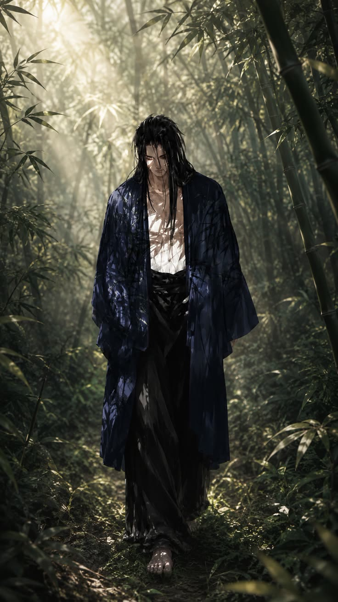
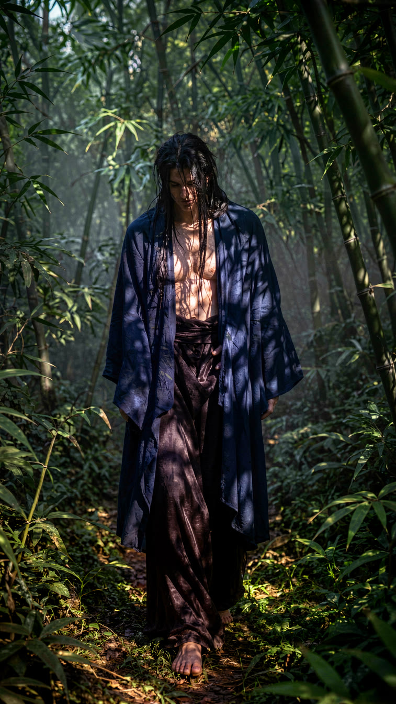
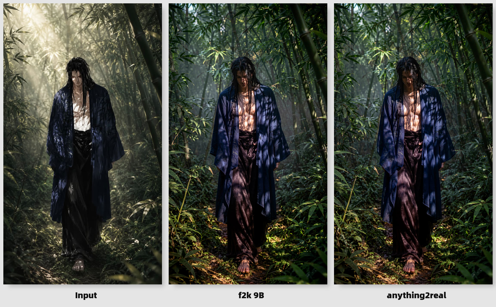
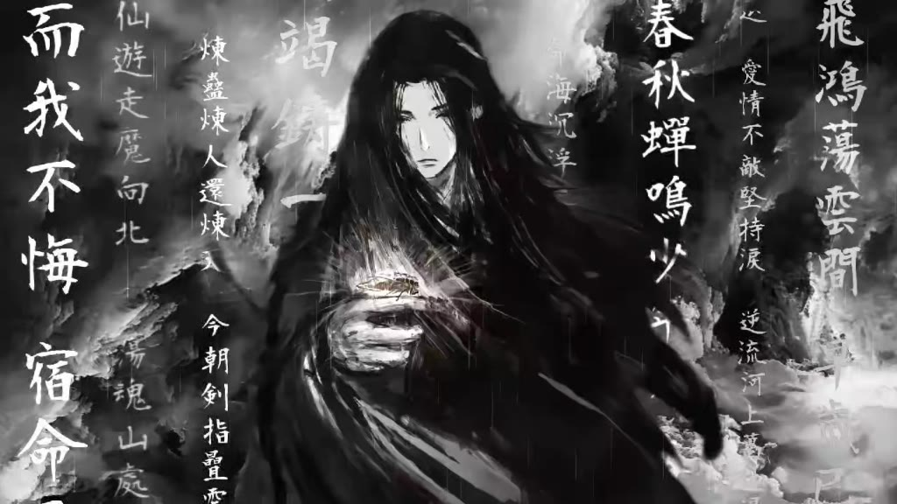
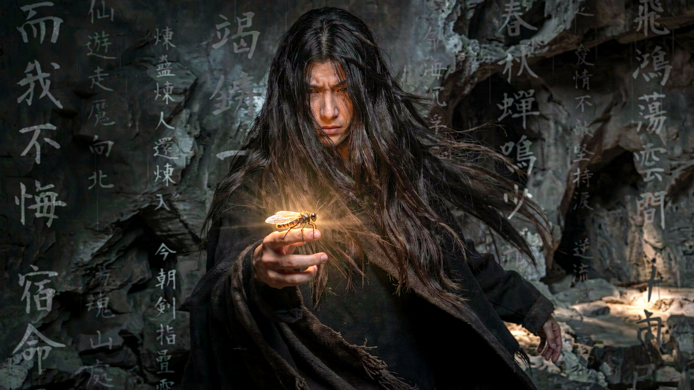
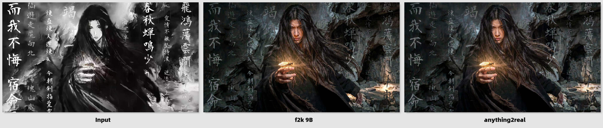

01
动漫→真人
Anime to Photoreal将二维动漫角色转换为写实摄影质感：保留原构图、姿态与服装结构，重建皮肤纹理、织物褶皱与自然光影。收录竹林、洞穴持烛两个场景：各含同构图分屏对比（悬停任一侧扩展为主视图）与三栏横向对比（Input / f2k 9B / anything2real）。
分屏扩展 · 竹林竖版 · 左右对照


悬停（或点按）任一画面 → 该侧扩展为主视图，另一侧收缩 · 移出恢复等分
三栏横向对比 · 竹林Input ｜ f2k 9B ｜ anything2real

分屏扩展 · 洞穴持烛横版 · 上下对照


悬停（或点按）任一画面 → 该侧扩展为主视图 · 横版上下对照
三栏横向对比 · 洞穴持烛Input ｜ f2k 9B ｜ anything2real

模型档案 · 动漫 → 真人 LoRA
训练底模: Krea 2训练步数: 3000触发词: HQM建议使用权重: 0.8
这是一款专为将二次元风格转换为写实画风而打造的 LoRA 模型，融合真实皮肤与织物材质、电影级光影逻辑，在保持原图构图、姿态与角色身份的同时，实现写实质感与动漫张力的统一。
不同于通用动漫转真人模型，该模型强调：
- 写实质感重建（Photorealistic Reconstruction）
- 身份与构图保持（Identity & Composition Preservation）
- 光影逻辑统一（Cinematic Lighting）
让二次元画面具备摄影质感，又保留原构图的叙事张力。
02
写实→像素
Photoreal to Pixel Art将写实照片转换为像素风格：量化色阶、规整像素网格，同时保留主体轮廓与明暗关系。成果图待补充。
原图 · 写实
成果图待补充
结果 · 像素
成果图待补充
预留展位：把前后图放入 images/lora-style/ 并按项目 01 结构登记即可接入
03
风格化场景
Stylized Scene面向整幅场景的风格化蒸馏（沙砾、烟气等氛围题材），统一色调与笔触语言。成果图待补充。
原图 · 场景
成果图待补充
结果 · 风格化
成果图待补充
预留展位：把前后图放入 images/lora-style/ 并按项目 01 结构登记即可接入